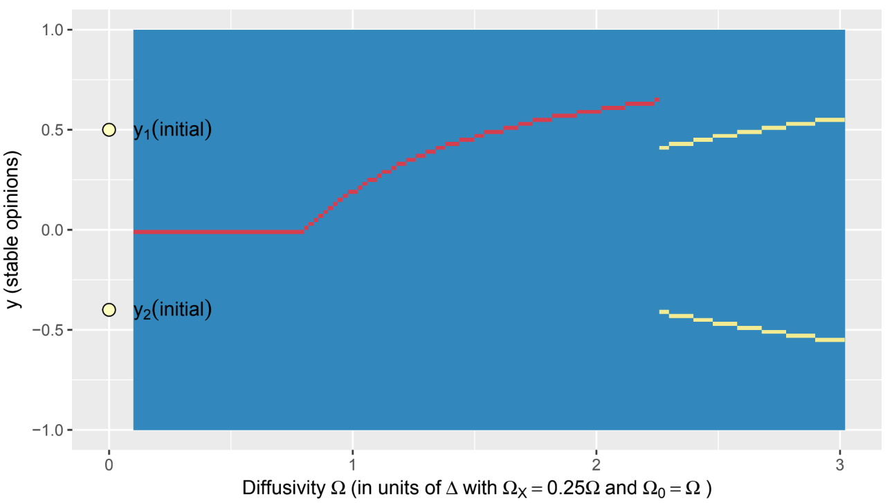
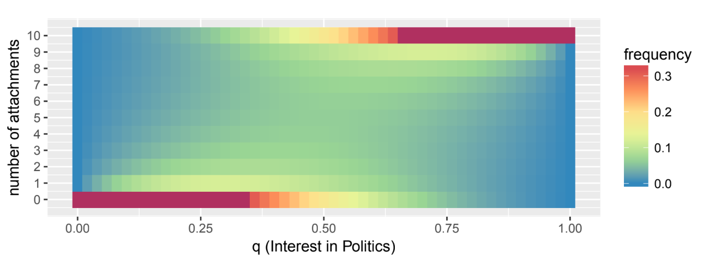
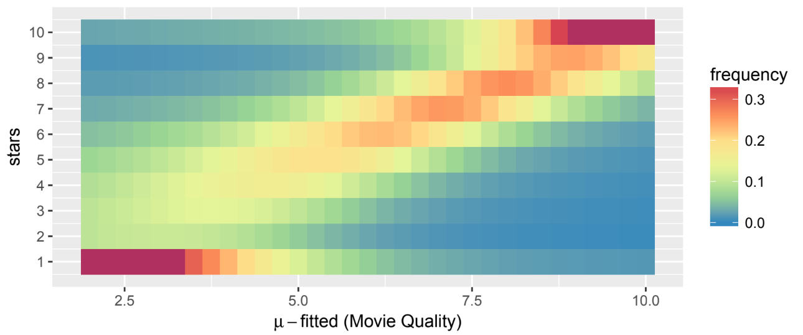
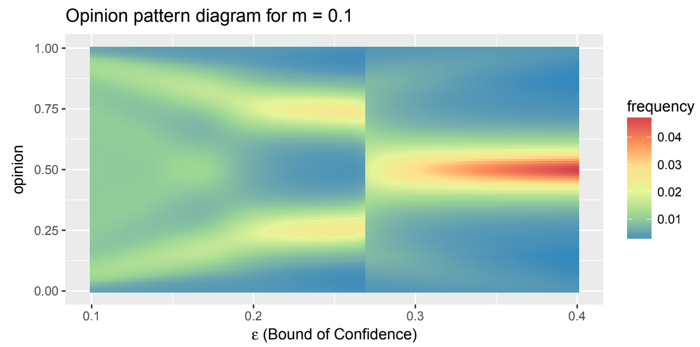
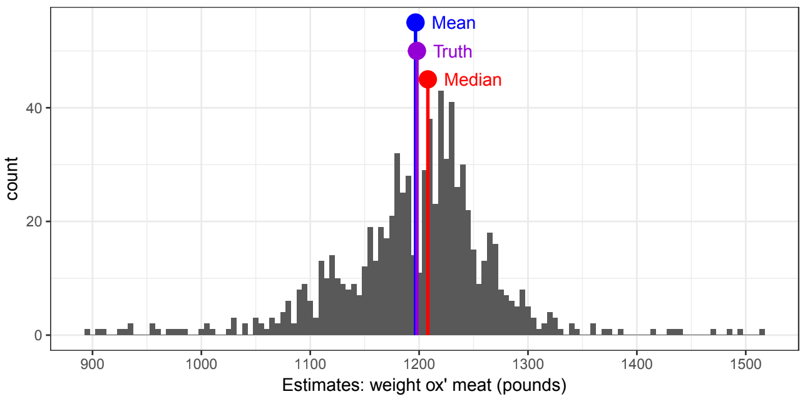
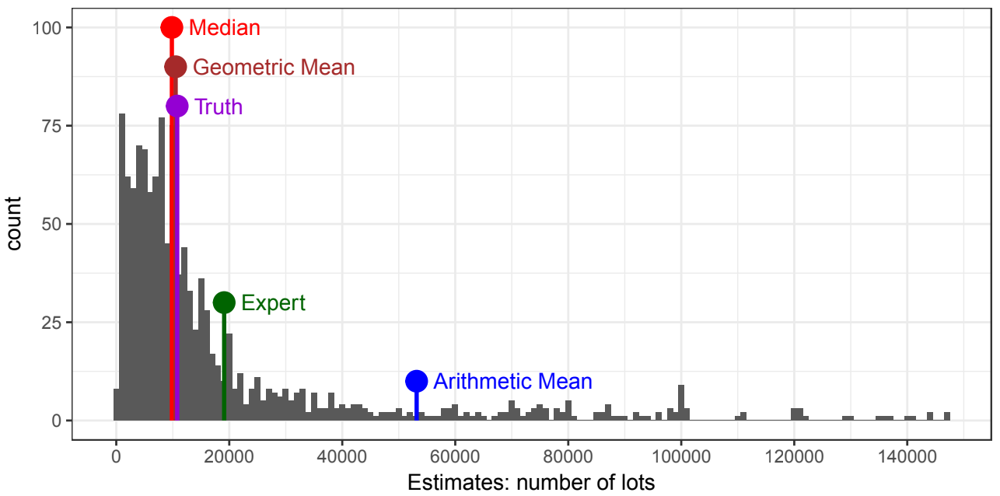
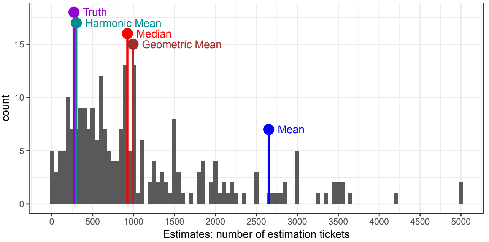

Submission for Habilitation at Jacobs University
I submitted for habilitation in Computational Social Science at Jacobs University Bremen with a cumulative habilitation work on
Systemic Effects in Models of Opinion Dynamics, Societal Growth, and the Wisdom of Crowds
It is an 88 page booklet presenting the results of twelve published papers focusing on systemic effects in opinion dynamics and societal growth and on the wisdom of crowd phenomenon in group guesstimation games. Read a short summary with a focus on the new results here.
Chapter 1: Introduction
This chapter outlines what systemic effects are and how they can be studied through agent-based modeling, referring to these two publications:
- Lorenz, J. (2012). Zur Methode der agenten-basierten Simulation in der Politikwissenschaft am Beispiel von Meinungsdynamik und Parteienwettstreit. In T. Bräuninger, A. Bächtiger, & S. Shikano (Eds.), Jahrbuch für Handlungs- und Entscheidungstheorie. Band 7: Experiment und Simulation (pp. 31–58). VS Verlag für Sozialwissenschaften. https://doi.org/10.1007/978-3-531-19606-0_2
- Groeber, P., Lorenz, J., & Schweitzer, F. (2014). Dissonance minimization as a microfoundation of social influence in models of opinion formation. Journal of Mathematical Sociology, 38(3), 147–174. https://doi.org/10.1080/0022250X.2012.724486
Chapter 2: Opinion Dynamics
This chapter presents four different models of opinion dynamics, which are the result of theory- or data-driven modeling attempts. The evolving opinion landscapes (= distribution of opinions, represented by histograms) can be plotted on the vertical axis against the core parameter of the model on the horizontal axis. This delivers an opinion pattern diagram where the coloring represents the frequency of agents’ opinions in that region of the [core parameter] x opinion space. The opinion landscapes are the one which appear after stabilization. See the four opinion pattern diagrams here:




Additionally discussed paper:
- Lorenz, J. (2017). Modeling the Evolution of Ideological Landscapes Through Opinion Dynamics. In W. Jager, R. Verbrugge, A. Flache, G. de Roo, L. Hoogduin, & C. Hemelrijk (Eds.), Advances in Social Simulation 2015 (pp. 255–266). Springer International Publishing. https://doi.org/10.1007/978-3-319-47253-9_22
Chapter 3: Societal Growth
This chapter presents the following three papers and concludes with a short discussion on systemic growth effects.
- König, M. D., Lorenz, J., & Zilibotti, F. (2016). Innovation vs. Imitation and the evolution of productivity distributions. Theoretical Economics, 11(3), 1053–1102. https://econtheory.org/ojs/index.php/te/article/view/20161053/0
- Lorenz, J., Paetzel, F., & Schweitzer, F. (2013). Redistribution spurs growth by using a portfolio effect on risky human capital. PLoS One, 8(2), e54904. https://doi.org/10.1371/journal.pone.0054904
- Lorenz, J., Paetzel, F., & Tepe, M. (2017). Just Don’t Call it a Tax! Framing in an Experiment on Voting and Redistribution. Journal of Experimental Political Science, 4(3), 183–194. https://doi.org/10.1017/XPS.2016.7
Chapter 4: The Wisdom of the Crowd
Besides presenting the results of three papers, this chapter presents a thorough discussion and definition of the wisdom of crowd in group guesstimation tasks (Sec. 4.2). It presents and analyzes three datasets (Sec. 4.1), from which one is the data set from Galton’s famous 1907 paper, while the other twoare collected by my. The later ones were only treated in this blog before. Take a look at the histograms and how different measures of aggregation perform:



The chapter also presents a new concept to relate systematic bias to the expected fraction of “ad hoc” experts in a crowd (Sec. 4.5) and how this transforms to a measure for optimal crowd size. Finally, the concept of diversity sampling is presented (also Sec. 4.5) which shows the doubleedge that it improves the correctness of aggregate estimates for small crowds for the arithmetic mean, while it reduces it for the median. The papers presented are:
- Rauhut, H., & Lorenz, J. (2010). The wisdom of crowds in one mind: How individuals can simulate the knowledge of diverse societies to reach better decisions. Journal of Mathematical Psychology, 55, 191–197. https://doi.org/10.1016/j.jmp.2010.10.002
- Lorenz, J., Rauhut, H., Schweitzer, F., & Helbing, D. (2011). How social influence can undermine the wisdom of crowd effect. Proceedings of the National Academy of Sciences, 108(22), 9020–9025. https://doi.org/10.1073/pnas.1008636108
Source files
Source files for the submitted version including R code are at GitHub: janlorenz/habil.